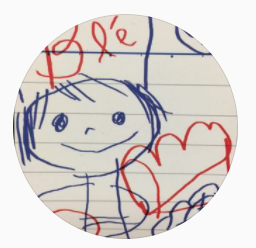

About

JR蒲田駅から徒歩5分、1回2時間(※1)でパン作りの基本から発展まで学べます。
1回につき最大で2名様までの少人数制なので、一人ひとりに合わせたペースでレッスンいたします。
パン作り初心者でももちろん大丈夫です。
1回4,000円(※2)、レシピ代・材料費込！
レッスン内で作ったパンはもちろんお持ちお帰りいただけます。
※1 クロワッサンなど一部メニューによっては所要時間を3時間ほど頂く場合がございます。
※2 一部メニューによっては料金が異なります。詳しくはメニューページよりご確認ください。